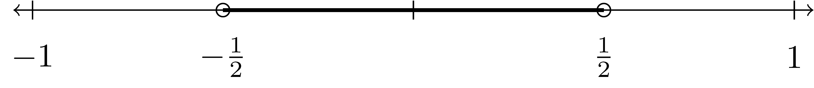

- Preface
- Acknowledgements
- I FOUNDATIONS
- 1 Mathematics Education Foundations
- 2 Set Theory
- 3 Equality, Order, and Equivalence
- 4 Number Systems
- 5 Functions
- II ALGEBRA
- 6 Groups, Rings, and Fields
- 7 Integral Domains and Polynomials
- 8 Real Valued Functions
- III GEOMETRY
- 9 Axiomatic Geometry
- 10 Measurement
- 11 Groups and Geometry
- 12 Euclidean Transformational Geometry
- IV DATA ANALYSIS
- 13 Data Analysis Foundations
- 14 Exploring Data
- 15 Samples, Simulations, and Probability
- 16 Estimating Parameters and Testing Hypotheses
- References
2.3 Collections of Sets
Now that we know how to combine pairs of sets, we can inductively define unions and intersections for a finite or infinite number of sets.
When we are dealing with more than one or two related but distinct sets we often use another set as an index set in order to more easily describe and distinguish the sets in the collection.
Using indexing sets, we can then define the union and intersection of a collection of sets.
An indexed collection of sets \(\{A_i\}_{i\in S}\) is called mutually disjoint if, for any \(i,j\in S\) with \(i\neq j\), \(A_i \cap A_j = \emptyset\). The sets in the previous example are mutually disjoint since \([n,n+1) \cap [m,m+1) = \emptyset\) if \(m\neq n\).
Example 2.13 For each positive integer \(n\), (\(n\in \mathbb{N}\)), let \[S_n= \left\{x\in \mathbb{R}\middle \vert \frac{-1}{n} < x < \frac{1}{n} \right\}.\]
\[S_1=(-1,1)\] \[S_2=(\frac{-1}{2}, \frac{1}{2})\]
\[S_2=(\frac{-1}{2}, \frac{1}{2})\]
 \[S_3=(\frac{-1}{3}, \frac{1}{3})\]

Then we can see that for any \(i<j\), we have that \(S_i\cap S_j = S_j\) and \(S_i \cup S_j = S_i\).
We can also take the union and intersections over the entire collection of sets. \[ \bigcup_{n\in \mathbb{N}} S_n = (-1,1) \quad \mbox{ and } \quad \bigcap_{n\in \mathbb{N}} S_n = \{0\}.\]
The above example is also an example of what is called a nested collection of sets.
Using the ideas of indexing sets and families of sets, we can generalize De Morgan’s Laws to a general collection of sets, the proofs of which are very similar to the proof in the case of two sets.
2.3.1 Exercises
For each of the following collections of sets:
\[\displaystyle{\mathcal{A} = \left\{ \left[ \frac{1}{n},n\right) \right\}_{n=2,3,4,\ldots }}\]
\[\displaystyle{\mathcal{B} = \left\{ \left( n,\infty \right) \right\}_{n=0,1,2,3,4,5,\ldots} }\]
\[\displaystyle{\mathcal{C} = \left\{ \left[ -n, n \right] \right\}_{n=0,1,2,3,4,5,\ldots }}\]
\[\displaystyle{\mathcal{D} = \left\{ [x,x+1)\right\}_{x\in \mathbb{R}}}\]
\[\displaystyle{\mathcal{E} = \left\{ \{z\in \mathbb{C}\middle \vert|z|=r\}\right\}_{r\in \mathbb{R}^+} }\]
\[\displaystyle{\mathcal{F} = \left\{ \{n\in \mathbb{Z}\middle \vert n=3k+j \mbox{ for some } k\in \mathbb{Z}\}\right\}_{j=0,1,2}}\]
- Determine if the sets are mutually disjoint
- Determine if the collection is nested
- Find the union of the collection